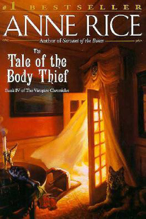

|  | The "coven" of vampires formed at the end of The Queen of the Damned has long since broken up, and Lestat has become extremely lonely. Among his only remaining friends is the mortal head of the Talamasca Caste, David Talbot, who is seventy-four years old. Although Lestat has repeatedly offered David the Dark Gift, David has always refused to become a vampire and keep Lestat company through eternity. Lonely and depressed, Lestat goes to the Gobi desert at dawn in a half-hearted suicide attempt. When he does not die, he goes to David's home in England to heal |